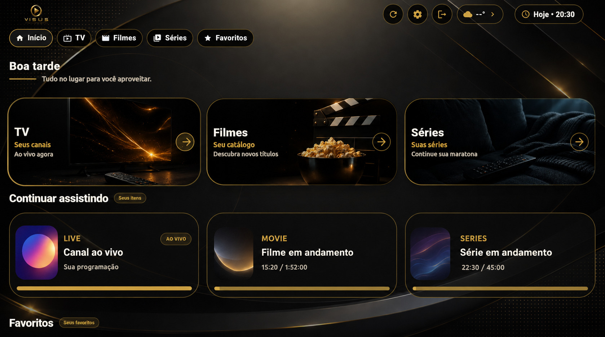
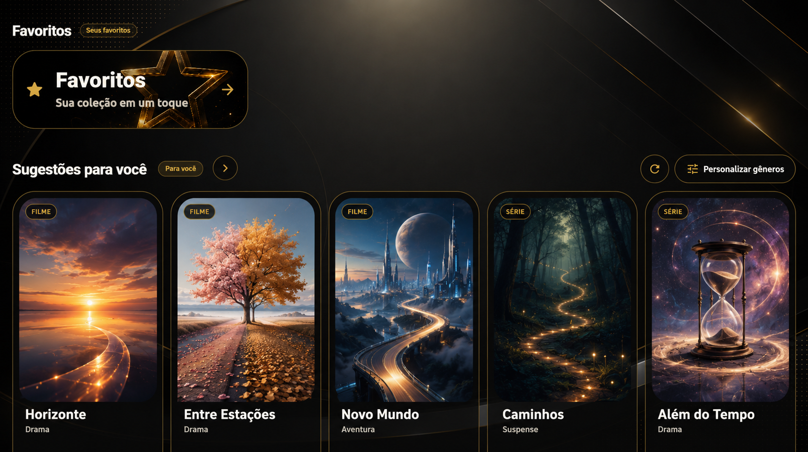
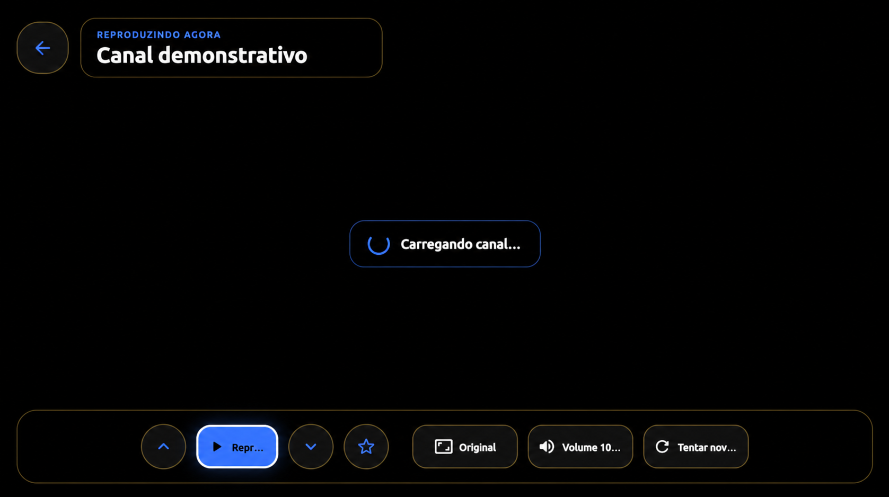
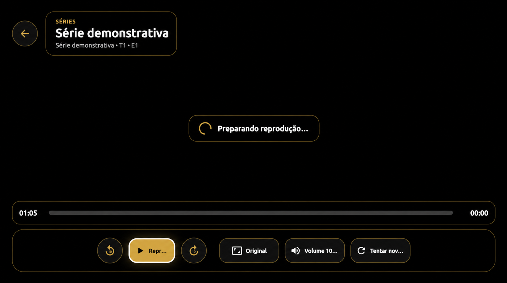

Feito para sua telaTV, celular, tablet e emuladores Android.
Uma experiência feita para todas as telas
Seu conteúdo.
Seu conteúdo.
Do seu jeito.
O VISUS transforma suas próprias fontes em uma experiência visual premium, organizada e fluida — na TV, no celular, no tablet ou onde você preferir.
AndroidGoogle TVCelular e tablet

MultidispositivoUma interface que se adapta.
Experiência premiumOrganização, controle e estilo.
Sua biblioteca organizadaTV, filmes, séries, favoritos e histórico.
Visual do seu jeitoTemas e ambientações para personalizar.
O essencial, bem resolvido
Mais que reproduzir.
Mais que reproduzir.
É aproveitar melhor.
Recursos pensados para deixar a navegação simples, bonita e coerente em qualquer dispositivo.
Início inteligente
Acesso rápido ao que importa, com conteúdo em andamento, favoritos e sugestões.
Catálogo organizado
TV, filmes e séries separados de forma clara para você encontrar tudo com menos passos.
Favoritos e histórico
Salve o que gosta e continue assistindo no mesmo dispositivo de onde parou.
Controle completo
Compatível com controle remoto, teclado, mouse e toque, conforme o aparelho utilizado.
Temas personalizados
Escolha a atmosfera da interface e transforme a experiência sem perder a usabilidade.
Clima sem rastreamento
Clima pela cidade escolhida manualmente, sem GPS, localização precisa ou atividade em segundo plano.
Descoberta sem complicação
Uma interface que convida você a explorar.
Sugestões, gêneros e favoritos aparecem em uma composição visual limpa, mantendo o foco no conteúdo e a navegação acessível em qualquer forma de controle.
- ✓Sugestões personalizadas no aparelho
- ✓Filtros por gênero
- ✓Navegação por controle, mouse, teclado e toque

Controle na medida certa
Players pensados para cada experiência.
Controles objetivos para canais ao vivo, filmes e episódios, com foco visível e operação multidispositivo.


Um VISUS. Várias telas.
Feito para acompanhar você.
A mesma identidade visual se adapta a diferentes tamanhos e formas de interação.
Transparência desde o início
Um player. O conteúdo é seu.
O VISUS é exclusivamente um reprodutor de mídia. O aplicativo não vende, fornece, hospeda, recomenda ou inclui listas, canais, filmes, séries ou qualquer serviço de conteúdo.
Você fornece sua própria fonte
Para usar o VISUS, o usuário precisa possuir uma fonte compatível e autorização para acessar o conteúdo nela disponível.
Compras vinculadas à Google Play
Pacotes pagos, como temas, serão compras únicas associadas à conta Google usada no pagamento, com opção de restaurar compras.
Preferências permanecem no aparelho
Favoritos, histórico, progresso e configurações são armazenados localmente e podem variar entre seus dispositivos.
Privacidade no clima
A cidade é escolhida manualmente. O VISUS não solicita GPS nem acompanha a localização do aparelho.
Em breve na Google Play
Disponível em breve noGoogle Play
→
Leve o VISUS para sua tela.
Baixe o app oficial para Android e transforme suas fontes em uma experiência premium.
O link oficial será disponibilizado após a publicação do aplicativo.